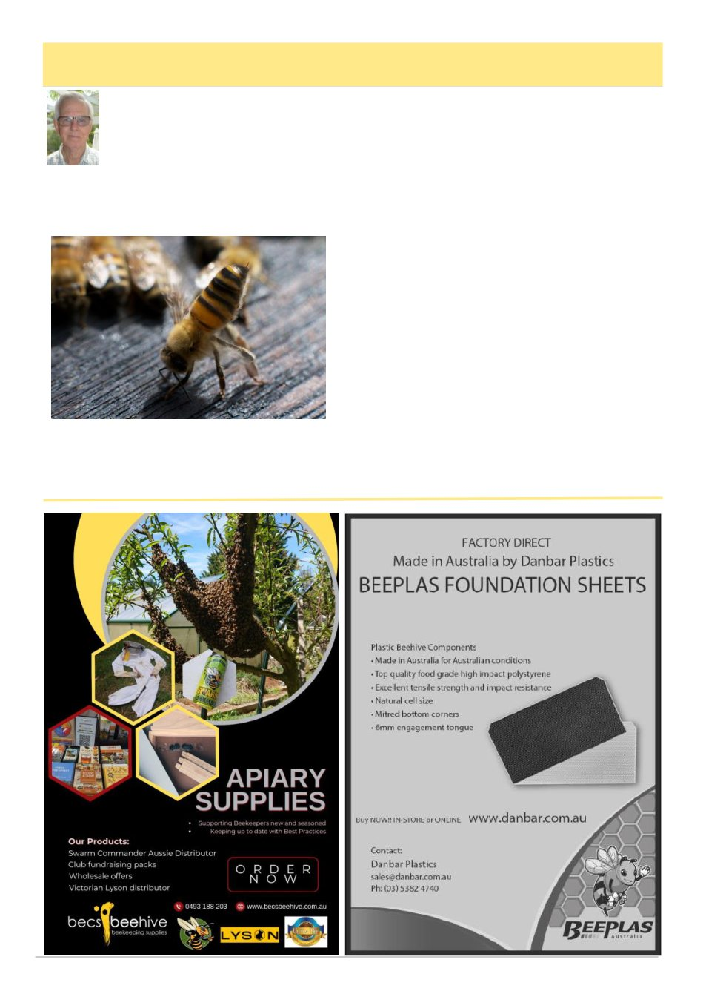

May 2026
19
Bee Intelligence
By Bruce Ward,
Geelong
Honey bees display a surprising level of in-
telligence for tiny insects. Their ability to communi-
cate, organise, and adapt to changing environments has
fascinated scientists and beekeepers for generations and
have led some to claim that bees are to some degree,
sentient, feeling beings.
The bee‟s apparent intelligence is expressed in their
complex behaviour. Bees can recognise patterns, solve
problems and learn from their experiences. In addition
to signs of individual intelligence, the honey bee colony
as a whole shows signs of collective intelligence, partic-
ularly the ability to make consensus decisions that are in
the best interests of the hive as a whole.
There is little doubt that the honey bee‟s intelligence
is enabled by its brain, which has the capacity to pro-
cess complex information from a variety of senses,
solve problems and make decisions. It also has areas
dedicated to memory, which allows the bee to learn
from its experience. For example, a foraging worker
can remember where they found a good supply of nec-
tar. They can then return to the same location and rec-
ognise the shape and colour of the good flowers before
homing-in on the familiar aroma of the good nectar
source.
Other aspects of the bee‟s intelligence are instinc-
tive. Embedded in the DNA of every bee are hard-
coded rules that govern how they respond to different
situations that they may encounter. For example, if a
worker bee encounters the alarm pheromone, they in-
stinctively switch into defensive mode. The intensity of
their defence depends on their strain (breed), but all
(Continued on page 20)
Most of the behaviour we observe in our bees is
purely instinctive. The fanning of this bee is a good
example of instinctive behaviour. Learned
behaviour is much harder to observe but can be
observed in controlled experiments.